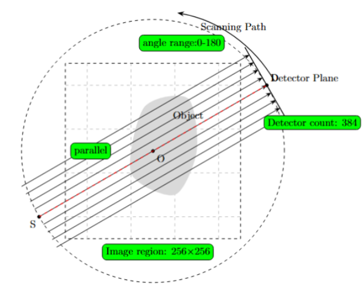

2D数据结构———以2维直线束为例#
本文展示astra的2D数据允许的函数操作以及如何进行内存管理
1. 导入工具包#
python文件的第一步通常是引入所需要的包
import astra
import numpy as np #python主要的矩阵数据处理库
import pylab #用于可视化
---------------------------------------------------------------------------
ModuleNotFoundError Traceback (most recent call last)
Cell In[1], line 3
1 import astra
2 import numpy as np #python主要的矩阵数据处理库
----> 3 import pylab #用于可视化
ModuleNotFoundError: No module named 'pylab'
2. 确定几何#
我们需要根据实际场景确定工程的几何参数设置.以下面图片展示的场景为例子

#体积参数
vol_geom = astra.create_vol_geom(256, 256)
#投影参数
proj_geom = astra.create_proj_geom(
'parallel', # 使用平行光束（如老式CT）
1.0, # 探测器间距1像素
384, # 有384个探测单元
np.linspace(0, np.pi, 180, False) # 从0到180°拍180张（每1° 1张），False表示不包含终点
)
#创建投影器
proj_id = astra.create_projector('cuda', proj_geom, vol_geom)
# 'cuda'表示使用NVIDIA显卡加速
3.创建数据对象#
astra的2D数据存贮两种类型的数据，重建体和投影数据
v0 = astra.data2d.create('-vol', vol_geom) # 空容器（全0）
v1 = astra.data2d.create('-vol', vol_geom, 3.0) # 所有格子填3.0
phantom_id, A = astra.data2d.shepp_logan(vol_geom) # 生成标准测试模型
v2 = astra.data2d.create('-vol', vol_geom, A) # 存入仿体数据
s0 = astra.data2d.create('-sino', proj_geom)
可以根据ID使用get来获取array格式的数据
R0 = astra.data2d.get(v0)
R1 = astra.data2d.get(v1)
R2 = astra.data2d.get(v2)
R0,R1,R2
(array([[0., 0., 0., ..., 0., 0., 0.],
[0., 0., 0., ..., 0., 0., 0.],
[0., 0., 0., ..., 0., 0., 0.],
...,
[0., 0., 0., ..., 0., 0., 0.],
[0., 0., 0., ..., 0., 0., 0.],
[0., 0., 0., ..., 0., 0., 0.]], dtype=float32),
array([[3., 3., 3., ..., 3., 3., 3.],
[3., 3., 3., ..., 3., 3., 3.],
[3., 3., 3., ..., 3., 3., 3.],
...,
[3., 3., 3., ..., 3., 3., 3.],
[3., 3., 3., ..., 3., 3., 3.],
[3., 3., 3., ..., 3., 3., 3.]], dtype=float32),
array([[0., 0., 0., ..., 0., 0., 0.],
[0., 0., 0., ..., 0., 0., 0.],
[0., 0., 0., ..., 0., 0., 0.],
...,
[0., 0., 0., ..., 0., 0., 0.],
[0., 0., 0., ..., 0., 0., 0.],
[0., 0., 0., ..., 0., 0., 0.]], dtype=float32))
sino= astra.data2d.get(s0)
#查看np形状
sino.shape
(180, 384)
pylab.gray() # 使用灰度图显示
pylab.imshow(R2)
<matplotlib.image.AxesImage at 0x7da2a024e190>
改变获取的array变量不会影响astra对象
R0=R2.copy()
new_R0=astra.data2d.get(v0)
pylab.gray() # 使用灰度图显示
pylab.imshow(new_R0)
<matplotlib.image.AxesImage at 0x7da2a0160370>
4.编辑astra2D数据对象#
我们可以根据实际场景利用ID编辑astra2D数据对象
#写入常数
astra.data2d.store(v2, 0)
new_R2=astra.data2d.get(v2)
pylab.gray() # 使用灰度图显示
pylab.imshow(new_R2)
<matplotlib.image.AxesImage at 0x7da2a00dc910>
#写入矩阵
astra.data2d.store(v1, A)
new_R1=astra.data2d.get(v1)
pylab.gray() # 使用灰度图显示
pylab.imshow(new_R1)
<matplotlib.image.AxesImage at 0x7da2a00531f0>
5. 其他操作#
这里介绍一些2D数据允许的其他操作，下面的表列出了官方文档提供的函数
函数类别 |
函数名称 |
功能描述 |
|---|---|---|
创建类 |
|
创建新2D数据对象（体积/投影数据） |
|
生成标准/改进版Shepp-Logan仿体数据 |
|
|
将现有numpy数组与ASTRA内存关联（零拷贝） |
|
存取类 |
|
向现有对象填充数据（标量/数组） |
|
获取数据副本（独立内存） |
|
|
获取内存共享视图（修改会影响原始数据） |
|
几何类 |
|
获取对象的几何结构描述字典 |
管理类 |
|
删除指定ID的对象 |
|
清空所有2D数据对象 |
|
|
打印当前内存中所有2D对象信息 |
#info
astra.data2d.info()
id init description
-----------------------------------------
2 v 256x256 volume data
3 v 256x256 volume data
4 v 256x256 volume data
5 v 256x256 volume data
6 v 384x180 sinogram data
-----------------------------------------
astra.data2d.clear()
astra.data2d.info()
id init description
-----------------------------------------
-----------------------------------------
link函数将array映射为astra数据对象
external_array = np.zeros((256, 256), dtype=np.float32)
mapped_id = astra.data2d.link('-vol', vol_geom, external_array)
# 此时修改external_array会同步影响ASTRA内部数据！
external_array[100:150, 100:150] = 1.0 # 直接生效
astra.data2d.info()
id init description
-----------------------------------------
7 v 256x256 volume data
-----------------------------------------
change_R=astra.data2d.get(mapped_id)
pylab.gray() # 使用灰度图显示
pylab.imshow(change_R)
<matplotlib.image.AxesImage at 0x7da297fcb550>
利用 get_geometry()获取对象的几何结构描述字典
geom = astra.data2d.get_geometry(mapped_id)
print(geom) # 输出几何结构详情
{'GridColCount': 256, 'GridRowCount': 256, 'options': {'WindowMinX': -128, 'WindowMaxX': 128, 'WindowMinY': -128, 'WindowMaxY': 128}}
在生成数据时可以选择不返回具体内容
# 标准仿体
std_phantom_id, std_data = astra.data2d.shepp_logan(vol_geom)
# 修改版仿体（对比度高）
modified_phantom_id = astra.data2d.shepp_logan(vol_geom, modified=True, returnData=False)
astra.data2d.info()
id init description
-----------------------------------------
7 v 256x256 volume data
8 v 256x256 volume data
9 v 256x256 volume data
-----------------------------------------
mp=astra.data2d.get_shared(modified_phantom_id)
pylab.gray() # 使用灰度图显示
pylab.imshow(mp)
<matplotlib.image.AxesImage at 0x7da297fbdf10>
mp[100:150, 100:150] = 1.0 # 直接生效
new_mp=astra.data2d.get(modified_phantom_id)
pylab.gray() # 使用灰度图显示
pylab.imshow(new_mp)
<matplotlib.image.AxesImage at 0x7da297f3b550>
astra.data2d.clear()